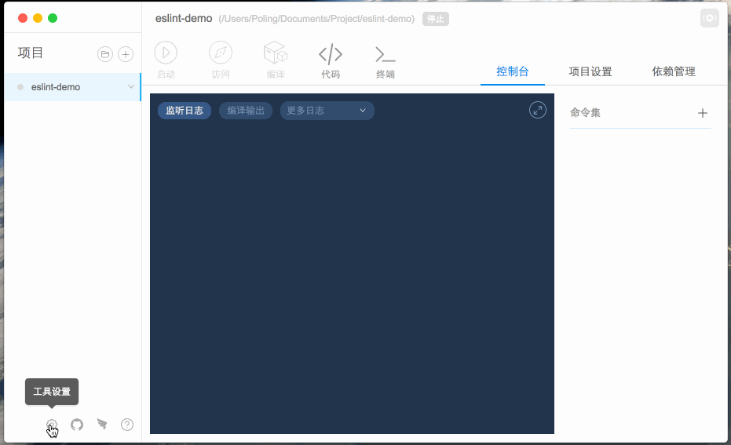

代码质量检查
安装
命令行安装
nowa install eslint工具安装 设置 -> 插件设置 -> 选择
nowa-eslint安装
使用
nowa-eslint 只能作用于 nowa 项目。
- 使用终端进入项目目录下，直接输入
nowa eslint
$ nowa eslint --help
EG
// default lint directory is ./src
$ nowa eslint
// lint index.js
$ nowa eslint index.js
//lint index.js and directory ./src/
$ nowa eslint --files index.js,./src/
//lint with --fix
$ nowa eslint --files index.js --fix
- 使用工具的命令集，添加
nowa eslint命令
